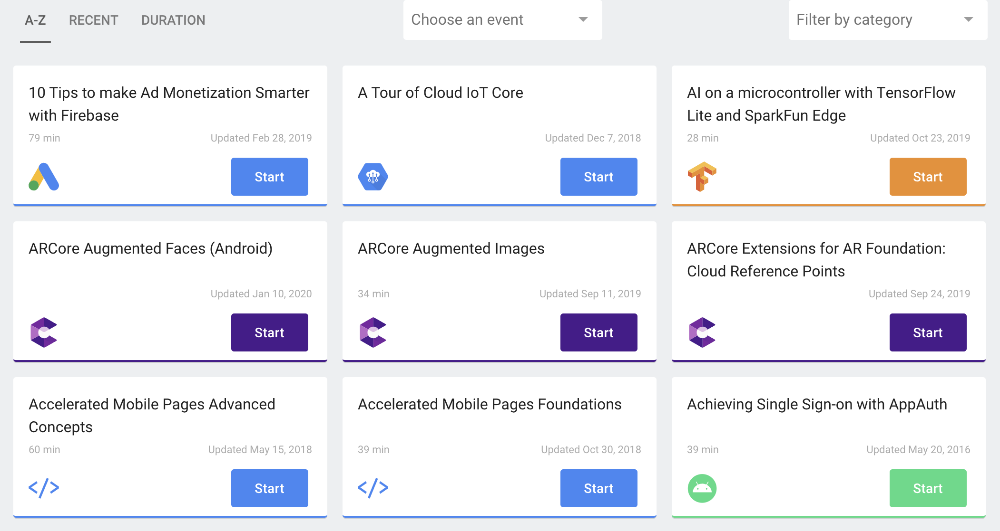
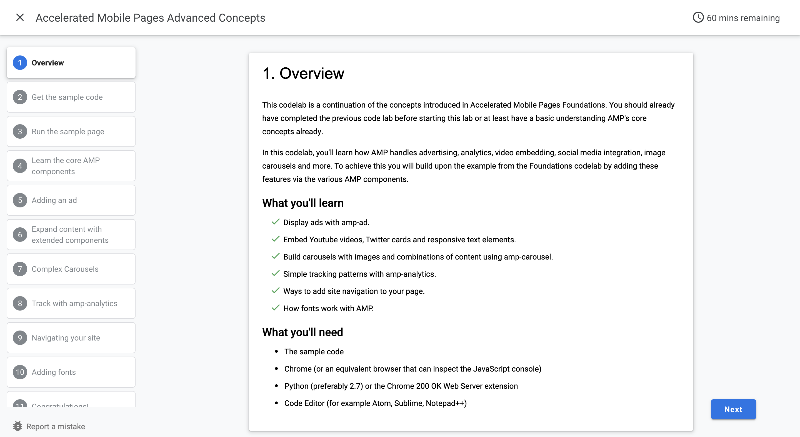

Google が作成する Google サービスのチュートリアルサイトのようなもの。
Firebase などのチュートリアルをハンズオン形式で使い方を確認できる。

Google Codelabs に掲載されているものには間違いが多々あるが、UIは非常に良い

また、ソースコードがGit公開されている。
この Codelabs に掲載されているスライドは、上記Gitを参照して作成することもできるし、claat という Go言語で作成された CLI を使用することで作成可能。
Markdown を変換することもできるしお手軽に作成できる。詳細は以下の2サイト。
の3手順だけです。
markdwon の書き方はこちら